ImgLot (Image Lottery)

About
Image Lottery is a fun program that shows you a random image that someone else has submitted. The only requirement is that you have to submit your own photo first! When submitting, it is possible to mark the image as NSFW (Not Safe For Work) so that people have the option to NOT show the image you submit if it isn't work approapriate. After submitting your image and selecting whether or not it is NSFW you can select whether or not NSFW responses are allowed. Finally, you get a random image!
Implementation

- The image selected is submitted to the Express.js webserver
- The server verifies that it is not a duplicate based on the md5 and that it is a valid file type using mimetype
- The server adds the md5, file format, and NSFW tag (boolean value) to the Postgres database
- The database chooses a random md5 file for the server to read from the filesystem
- The server sends the image directly back to the user on imglot
Discussion
I've always been intrigued by software projects that utilize completely random results. To me, it brings a level of entertainment and interest to simple websites like this one. The inspiration for this website was based upon a previous random, literally, project of mine (8ball). In addition, I wanted to implement something similar to StumbleUpon on a smaller scale for images.
It could be interpreted that my inclusion of the option for NSFW image submissions is unprofessional or low brow. The reason that I implemented this feature was so that people who felt this way could still use Image Lottery without having to worry about seeing images or content that they didn't want to. It's a similar approach to how Reddit handles submissions of the same sort and I wanted to make the site accessible and entertaining to as many people as possible.
It could be interpreted that my inclusion of the option for NSFW image submissions is unprofessional or low brow. The reason that I implemented this feature was so that people who felt this way could still use Image Lottery without having to worry about seeing images or content that they didn't want to. It's a similar approach to how Reddit handles submissions of the same sort and I wanted to make the site accessible and entertaining to as many people as possible.